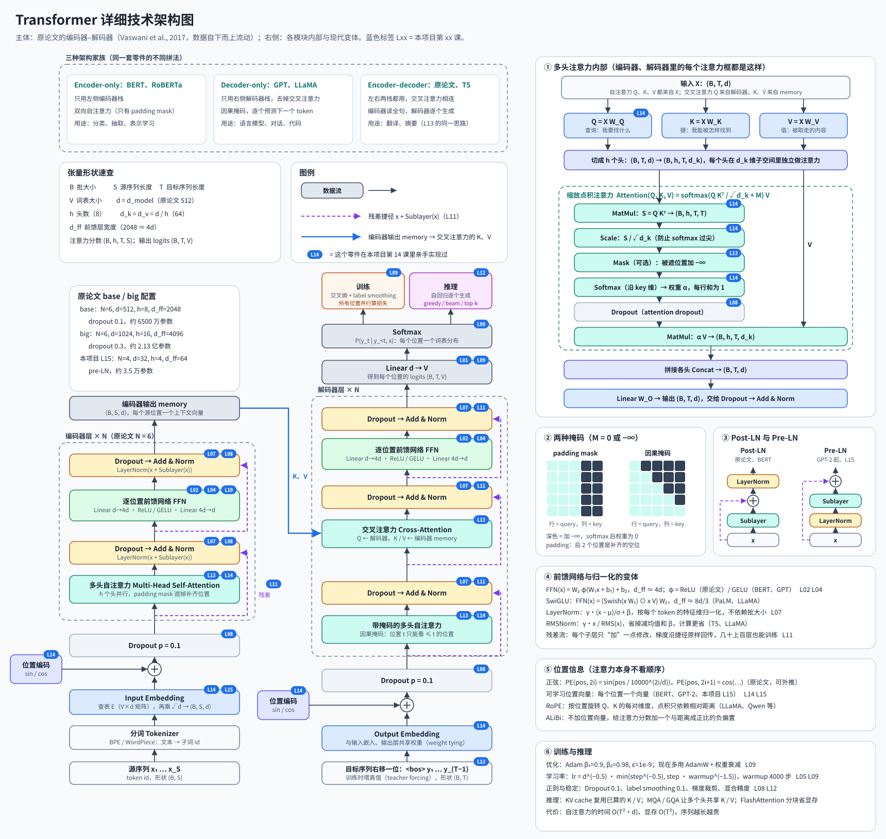

第 16 课
阅读课，无需运行
技术汇总 + 架构图
Transformer 技术全景与详细架构图
第 15 课亲手拼过一个小 Transformer。这一课不跑代码，把完整 Transformer 用到的每一项技术汇总起来： 原论文的编码器–解码器结构、注意力内部的每一步、块的两种写法、训练配方、推理加速，以及后来演化出的常见变体。 每一项都标出它在本项目哪一课里实现过，没实现过的也写清楚做什么、为什么。
怎么读这一课
- 先看架构图：左边两栏是原论文的编码器（左）和解码器（右），数据自下而上流动；右侧六个面板是各模块的内部和变体。
- 图里每个框右上角的蓝色标签（如
L14）表示本项目第 14 课里亲手写过这个零件，可以回去对照代码。 - 再按下面的分类表逐项读。表格的“本项目”一列为空，说明本项目没有实现它，只需要知道它解决什么问题。
详细技术架构图

点击图片在新标签页打开原尺寸（1720 × 1630）大图。图由
scripts/build_transformer_diagram.py 生成。一次前向传播：张量形状怎么变
以翻译为例。B 是批大小，S、T 是源句和目标句长度，d 是模型宽度（原论文 512），h 是头数（8），V 是词表大小。
源句 token id (B, S) → 嵌入 × √d + 位置编码 (B, S, d) → N 个编码器层 (B, S, d) 每层：自注意力 → Add & Norm → FFN → Add & Norm = memory (B, S, d) 目标句右移一位 (B, T) <bos> y₁ … y_(T−1)，训练时用真值（teacher forcing） → 嵌入 × √d + 位置编码 (B, T, d) → N 个解码器层 (B, T, d) 每层：带因果掩码的自注意力 → 交叉注意力(K、V = memory) → FFN → Linear d → V (B, T, V) logits → softmax (B, T, V) 每个位置一个词表分布，和真值 y₁ … y_T 算交叉熵 注意力内部：Q、K、V (B, h, T, d/h) 分数 Q Kᵀ (B, h, T, T)；交叉注意力是 (B, h, T, S)
输入表示
| 技术 | 做什么 | 关键做法 | 本项目 |
|---|---|---|---|
| 分词（BPE / WordPiece / SentencePiece） | 把文本切成子词，控制词表大小，又不会遇到没见过的词 | 从字符开始反复合并最常见的相邻片段 | — （L12 用字符级） |
| Token 嵌入 | 把 id 变成 d 维向量 | 查表 E（V × d）；原论文再乘 √d，让嵌入和位置编码尺度相当 | L14、L15 |
| 正弦位置编码 | 告诉模型每个 token 在第几位 | PE(pos, 2i) = sin(pos / 10000^(2i/d))，奇数维用 cos；不用学，能外推到更长序列 | — |
| 可学习位置向量 | 同上 | 每个位置一个可训练向量，加在嵌入上（BERT、GPT-2） | L15 |
| RoPE 旋转位置编码 | 只关心相对距离 | 按位置把 Q、K 的每对维度旋转一个角度，点积只依赖两者的距离（LLaMA、Qwen 等） | — |
| ALiBi | 不加位置向量也能分先后 | 给注意力分数加一个与距离成正比的负偏置，越远越小 | — |
| 权重共享（weight tying） | 省参数、输入输出用同一套“词义” | 输出层 Linear 的权重 = 嵌入矩阵的转置 | — |
为什么必须有位置信息注意力只按内容打分，把输入顺序打乱，每个位置的输出只是跟着换位置。第 15 课去掉位置向量后，排序任务的整句准确率从 99.6% 掉到 0%。
注意力
| 技术 | 做什么 | 关键做法 | 本项目 |
|---|---|---|---|
| 缩放点积注意力 | 每个位置按相关程度，从所有位置取信息 | softmax(Q Kᵀ / √d_k + M) V | L14、L15 |
| Q / K / V 线性投影 | 同一个输入扮演“提问”“被找”“被取走的内容”三种角色 | Q = XW_Q，K = XW_K，V = XW_V | L14、L15 |
| 除以 √d_k | 防止 softmax 过尖、梯度消失 | 点积方差约为 d_k，除以 √d_k 拉回 1 左右 | L14 |
| 多头注意力 | 同时关注不同方面（语法、指代、位置…） | 把 d 维切成 h 份各算一次注意力，拼接后乘 W_O；总计算量和单头差不多 | L15 |
| padding mask | 让补齐用的空位不参与注意力 | 对应分数加 −∞，softmax 后权重为 0 | — |
| 因果掩码 | 生成第 t 个词时不能偷看后面 | 上三角位置加 −∞；训练时所有位置仍能并行计算 | — |
| 交叉注意力 | 解码器“回头看”源句 | Q 来自解码器，K、V 来自编码器输出 | L13（加性注意力版本） |
| 自注意力 | 序列内部互相看 | Q、K、V 都来自同一序列 | L15 |
块结构
| 技术 | 做什么 | 关键做法 | 本项目 |
|---|---|---|---|
| 残差连接 | 让几十层也能训练，梯度可沿捷径原样回传 | 每个子层都写成 x + Sublayer(x) | L11、L15 |
| LayerNorm | 把每个 token 的特征拉回稳定尺度，不依赖批大小 | γ · (x − μ) / σ + β，μ、σ 在特征维上算 | L07（BN）、L09、L15 |
| Post-LN | 原论文写法 | LayerNorm(x + Sublayer(x))；深层时依赖 warmup 才稳 | — |
| Pre-LN | 现在的主流写法 | x + Sublayer(LayerNorm(x))，最后再加一个 LayerNorm；更容易训练深层 | L15 |
| RMSNorm | 更省的归一化 | γ · x / RMS(x)，去掉减均值和 β（T5、LLaMA） | L09 |
| 逐位置前馈网络 FFN | 每个位置各自做一次非线性变换，参数大多在这里 | W₂ φ(W₁x + b₁) + b₂，宽度 d_ff ≈ 4d，所有位置共享权重 | L02、L15 |
| 激活函数 | 提供非线性 | ReLU（原论文）、GELU（BERT、GPT） | L04、L09、L15 |
| SwiGLU | 门控 FFN，效果更好 | (Swish(xW₁) ⊙ xV) W₂，d_ff ≈ 8d/3 以保持参数量（PaLM、LLaMA） | — |
第 15 课的消融结论在 4 层、学习率 0.1 的设置下，去掉残差、去掉 LayerNorm 都会让排序任务整句准确率掉到 1% 以下；FFN 去掉激活函数影响很小，因为 softmax 注意力本身就是非线性的。
输出与损失
| 技术 | 做什么 | 关键做法 | 本项目 |
|---|---|---|---|
| 输出线性层 + softmax | 把每个位置的向量变成词表上的概率 | logits = h W + b，再 softmax | L01、L09、L15 |
| 交叉熵 | 衡量预测分布和真值差多少 | −log p(真值)，对所有位置取平均 | L09、L15 |
| Teacher forcing | 训练时并行算所有位置的损失 | 解码器输入用右移一位的真值，而不是自己上一步的预测 | L13 |
| Label smoothing | 防止模型对答案过度自信 | 真值概率设为 1 − ε，其余均分 ε（原论文 ε = 0.1） | — |
训练
| 技术 | 做什么 | 关键做法 | 本项目 |
|---|---|---|---|
| 初始化 | 让每层输出一开始就有合适的尺度 | 权重 ~ N(0, 1/fan_in) 或 Xavier；GPT-2 还会按层数缩小残差分支的初始化 | L06、L11、L15 |
| Adam / AdamW | 按每个参数的梯度历史自适应调步长 | 原论文 β₁ = 0.9、β₂ = 0.98、ε = 1e-9；AdamW 把权重衰减和梯度更新分开 | L09、L15 |
| Warmup + 衰减 | 开头用小步子，避免 Adam 统计量还不准时被推飞 | 原论文 lr = d^(−0.5) · min(step^(−0.5), step · warmup^(−1.5))，warmup 4000 步；现在常用线性 warmup + 余弦衰减 | L05、L09、L15 |
| Dropout | 正则化 | 加在嵌入和每个子层输出上，原论文 p = 0.1；还有注意力权重上的 dropout | L08、L09、L15 |
| 权重衰减 | 正则化 | 每步把权重乘以 (1 − lr · λ)，通常不对 LayerNorm 和偏置做 | L08、L09、L15 |
| 梯度裁剪 | 防止偶发的大梯度把参数推飞 | 全局梯度范数超过阈值就整体缩小 | L12、L15 |
| 早停与验证集 | 选泛化最好的那一步 | 按验证损失回滚到最好的参数 | L08、L09、L15 |
| 混合精度 | 省显存、加速 | 前向反向用 fp16 / bf16，主权重用 fp32；fp16 要配合 loss scaling | — （本项目 GPU 路径用 float32） |
推理与效率
| 技术 | 做什么 | 关键做法 | 本项目 |
|---|---|---|---|
| 自回归解码 | 一个一个生成 | 把已生成的序列喂回解码器，取下一个位置的分布 | L12、L13 |
| Greedy / Beam search | 选输出序列 | greedy 每步取最大；beam 同时保留 k 条最好的候选（翻译常用 4–5） | L13（greedy） |
| 温度 / top-k / top-p 采样 | 让生成更多样 | logits 除以温度；只在概率最高的 k 个或累计概率 p 以内抽样 | L12（温度） |
| KV cache | 生成时不重复计算历史 | 把每层已算过的 K、V 存起来，新 token 只算自己的 Q、K、V | — |
| MQA / GQA | 缩小 KV cache | 多个查询头共用一组（或几组）K、V 头 | — |
| FlashAttention | 省显存、加速长序列 | 分块计算 softmax，不把 T × T 的分数矩阵整个写到显存 | — |
| 复杂度 | 长序列为什么贵 | 自注意力的时间约 O(T² · d)，显存约 O(T²)；FFN 是 O(T · d²) | — |
三种架构家族
Encoder-only（BERT、RoBERTa）
只用编码器栈，双向注意力。预训练时遮住部分 token 再预测（MLM）。适合分类、抽取、检索向量。
Decoder-only（GPT、LLaMA）
只用解码器栈，去掉交叉注意力，用因果掩码预测下一个 token。今天的大语言模型几乎都是这种。第 15 课的模型结构上属于编码器栈（没有因果掩码）。
Encoder–decoder（原论文、T5）
编码器读完整个输入，解码器边生成边用交叉注意力回看。适合翻译、摘要。第 13 课的 seq2seq 是同一思路的 RNN 版本。
和本项目的对照
| 原论文（base） | 本项目第 15 课 | |
|---|---|---|
| 结构 | 编码器 6 层 + 解码器 6 层 | 只有编码器 4 层（排序任务输入输出等长） |
| 宽度 | d = 512，h = 8，d_ff = 2048 | d = 32，h = 4，d_ff = 64 |
| 位置信息 | 正弦位置编码 | 可学习位置向量 |
| 归一化 | Post-LN | Pre-LN |
| 激活 | ReLU | GELU |
| 优化 | Adam + 反平方根学习率，warmup 4000 步 | AdamW + 线性 warmup 100 步 + 余弦，梯度裁剪 |
| 正则 | Dropout 0.1，label smoothing 0.1 | Dropout 0.1，权重衰减 0.01，早停 |
| 参数量 | 约 6500 万 | 约 3.5 万 |
| 反向传播 | 框架自动求导 | 全部手写，并做梯度检查（L03） |
把第 15 课的模型扩成完整的编码器–解码器，需要补上的只有三样：解码器里的因果掩码、交叉注意力（Q 来自解码器，K、V 来自编码器输出），以及推理时的逐个生成。这三样分别在第 13、14 课里出现过它们的原型。
论文库
下面 24 篇论文已下载到本地 docs/papers/，点“本地 PDF”直接在浏览器里看；“arXiv”是原始页面。建议先读原论文，再按需要读对应的零件。
本地没有 PDF？PDF 不随仓库提交（arXiv 论文大多不允许转载）。运行
python scripts/fetch_papers.py 会从 arXiv 下载缺失的文件，并按 docs/papers/manifest.json 里的 SHA-256 校验。| 类别 | 年份 | 论文 | 讲了什么 | 本项目 | 阅读 |
|---|---|---|---|---|---|
| 原论文与前身 | 2014 | Bahdanau et al., Neural Machine Translation by Jointly Learning to Align and Translate | 第一次在 seq2seq 里加注意力，解码时回看源句 | L13 | 本地 PDF · arXiv |
| 2017 | Vaswani et al., Attention Is All You Need | Transformer 原论文：只用注意力，不要循环和卷积。本课架构图主体照它画 | L15、L16 | 本地 PDF · arXiv | |
| 架构家族 | 2018 | Devlin et al., BERT | encoder-only，掩码语言模型预训练 | — | 本地 PDF · arXiv |
| 2019 | Raffel et al., T5: Exploring the Limits of Transfer Learning with a Unified Text-to-Text Transformer | encoder–decoder，把所有任务都写成“文本到文本” | — | 本地 PDF · arXiv | |
| 2020 | Brown et al., GPT-3: Language Models are Few-Shot Learners | decoder-only 放大到 1750 亿参数，出现少样本学习能力 | — | 本地 PDF · arXiv | |
| 2020 | Dosovitskiy et al., ViT: An Image is Worth 16x16 Words | 把图像切成小块当 token，Transformer 用到视觉上 | L10 对照 | 本地 PDF · arXiv | |
| 2023 | Touvron et al., LLaMA | 现代大模型的典型配方：Pre-RMSNorm、SwiGLU、RoPE | — | 本地 PDF · arXiv | |
| 块结构 | 2015 | He et al., Deep Residual Learning for Image Recognition | 残差连接，让上百层网络可以训练 | L11 | 本地 PDF · arXiv |
| 2016 | Ba et al., Layer Normalization | 按特征维归一化，不依赖批大小 | L07、L09、L15 | 本地 PDF · arXiv | |
| 2020 | Xiong et al., On Layer Normalization in the Transformer Architecture | 分析 Post-LN 为什么离不开 warmup，Pre-LN 为什么更好训 | L15 | 本地 PDF · arXiv | |
| 2019 | Zhang & Sennrich, Root Mean Square Layer Normalization | RMSNorm：去掉减均值，更省 | L09 | 本地 PDF · arXiv | |
| 2016 | Hendrycks & Gimpel, Gaussian Error Linear Units (GELUs) | GELU 激活，BERT、GPT 的默认选择 | L04、L09、L15 | 本地 PDF · arXiv | |
| 2020 | Shazeer, GLU Variants Improve Transformer | SwiGLU 等门控前馈网络 | — | 本地 PDF · arXiv | |
| 位置信息 | 2018 | Shaw et al., Self-Attention with Relative Position Representations | 用相对位置代替绝对位置 | — | 本地 PDF · arXiv |
| 2021 | Su et al., RoFormer: Rotary Position Embedding | RoPE：旋转 Q、K，点积只依赖相对距离 | — | 本地 PDF · arXiv | |
| 2021 | Press et al., Train Short, Test Long (ALiBi) | 给注意力分数加距离偏置，训练短、推理长 | — | 本地 PDF · arXiv | |
| 训练 | 2014 | Kingma & Ba, Adam: A Method for Stochastic Optimization | Adam 优化器 | L09、L12–L15 | 本地 PDF · arXiv |
| 2017 | Loshchilov & Hutter, Decoupled Weight Decay Regularization | AdamW：权重衰减和梯度更新分开 | L09、L15 | 本地 PDF · arXiv | |
| 2015 | Szegedy et al., Rethinking the Inception Architecture | 提出 label smoothing（Transformer 原论文沿用） | — | 本地 PDF · arXiv | |
| 2015 | Sennrich et al., Neural Machine Translation of Rare Words with Subword Units | BPE 子词分词 | — | 本地 PDF · arXiv | |
| 2020 | Kaplan et al., Scaling Laws for Neural Language Models | 损失随参数量、数据量、计算量按幂律下降 | — | 本地 PDF · arXiv | |
| 推理与效率 | 2019 | Shazeer, Fast Transformer Decoding: One Write-Head is All You Need | MQA：所有头共享一组 K、V，KV cache 变小 | — | 本地 PDF · arXiv |
| 2023 | Ainslie et al., GQA | 分组共享 K、V，介于多头和 MQA 之间 | — | 本地 PDF · arXiv | |
| 2022 | Dao et al., FlashAttention | 分块计算注意力，不存 T × T 矩阵，省显存又更快 | — | 本地 PDF · arXiv |